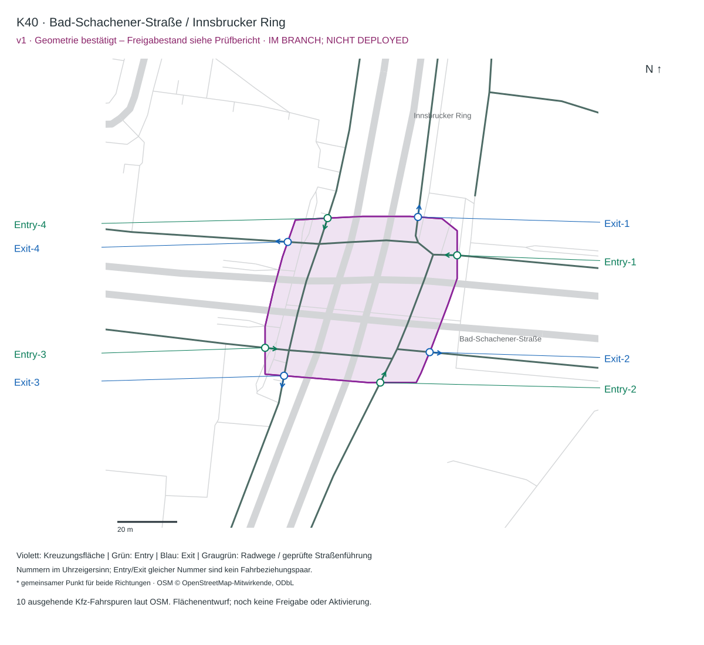

K38–K41 · Größte neue Kandidaten nach Fahrspuren
K38 und K40 mit je acht, K41 mit sechs Beziehungen technisch geprüft und im Branch aktiviert. K41 Entry-1 nach Exit-3/Exit-4 bleiben dauerhaft ausgeschlossen. K39 dauerhaft ausgeschlossen (komplexe Zweirichtungsradwege, Umbau 2026). Noch nicht deployed.
Gesamtübersicht · Kontaktübersicht
K38 v2 · Dachauer Straße / Georg-Brauchle-Ring / Wintrichring
12 ausgehende Kfz-Fahrspuren laut OSM. Flaeche umfasst die sechs nachgewiesenen Radweg-Aufteilungen/Zusammenfuehrungen an den Ecken; Punkte liegen jeweils davor/dahinter. Bitte vier Arme und Wartebereiche pruefen. Geometrie freigegeben; technische Pruefung bestanden. Im Branch aktiviert, noch nicht deployed.

K39 v1 · Fürstenrieder Straße / Landsberger Straße / Wotanstraße
Sonderfall mit komplexen Wegebeziehungen und Zweirichtungsradwegen; 2026 im Umbau. Von Thomas dauerhaft ausgeschlossen. Normale Ansagen bleiben; Fall geschlossen.

K40 v1 · Bad-Schachener-Straße / Innsbrucker Ring
10 ausgehende Kfz-Fahrspuren laut OSM. Flächenentwurf; noch keine Freigabe oder Aktivierung.

K41 v2 · Candidstraße / Grünwalder Straße / Tegernseer Landstraße
10 ausgehende Kfz-Fahrspuren laut OSM. Suedoestlicher Arm Tegernseer Landstrasse ohne durchgehenden Radweg: Entry/Exit auf der erlaubten Fahrbahn (OSM-Mittellinie). Kurze Radweganschluesse und gerichtete Verbindung muessen technisch noch geprueft werden. Candidtunnel/Kraftfahrstrasse ausgeschlossen. Dauerhaft ohne Kreuzungsansage: Entry-1 nach Exit-3 und Exit-4 wegen class:bicycle=-3 auf der Zufahrt (Thomas). Normale Ansagen bleiben.

OSM 2026-11-16 · © OpenStreetMap-Mitwirkende, ODbL.